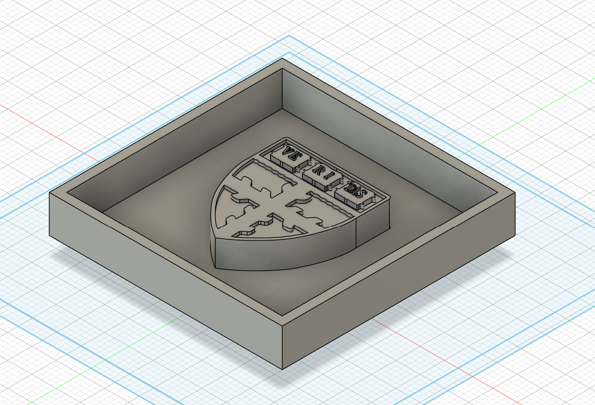
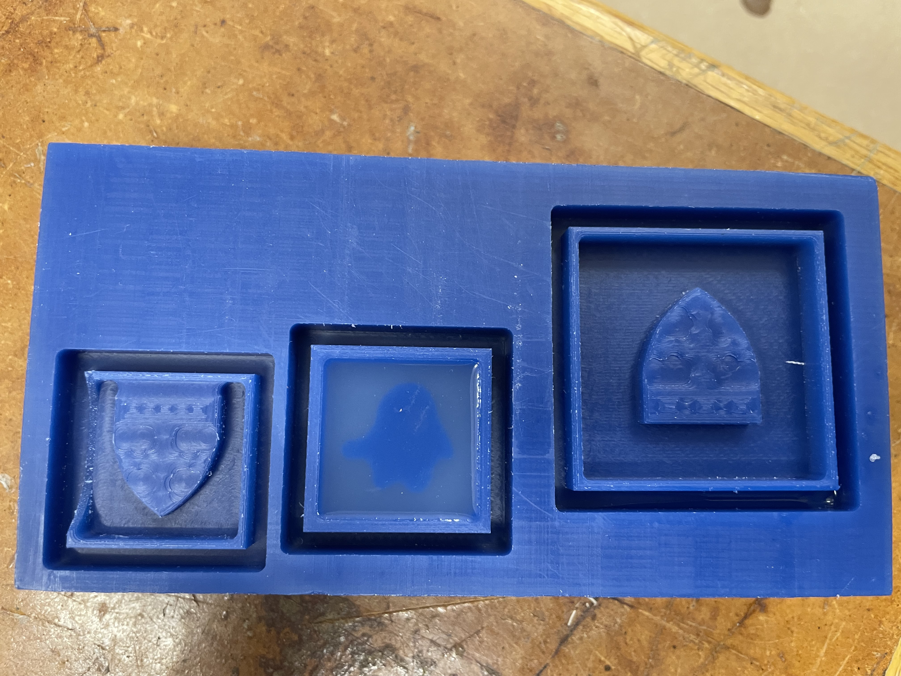
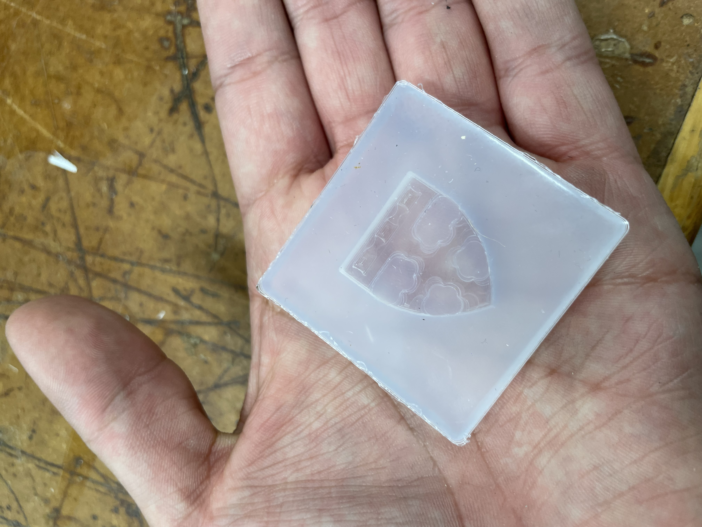
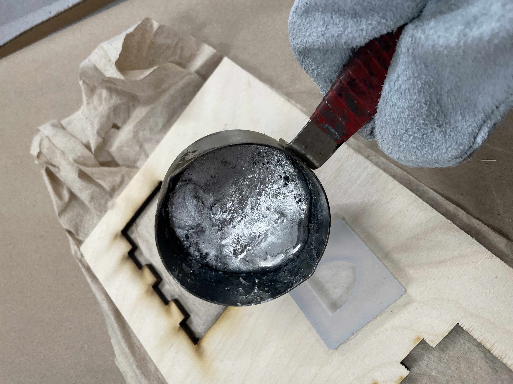
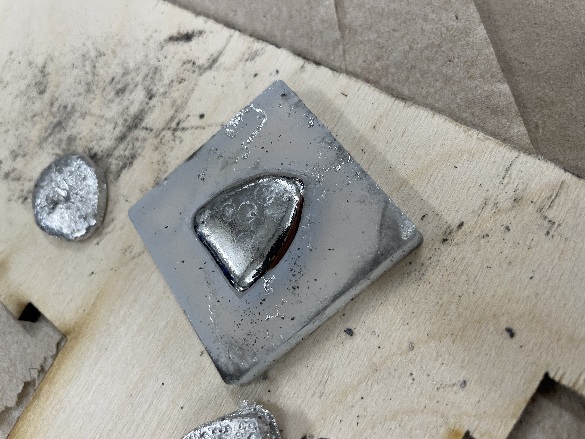
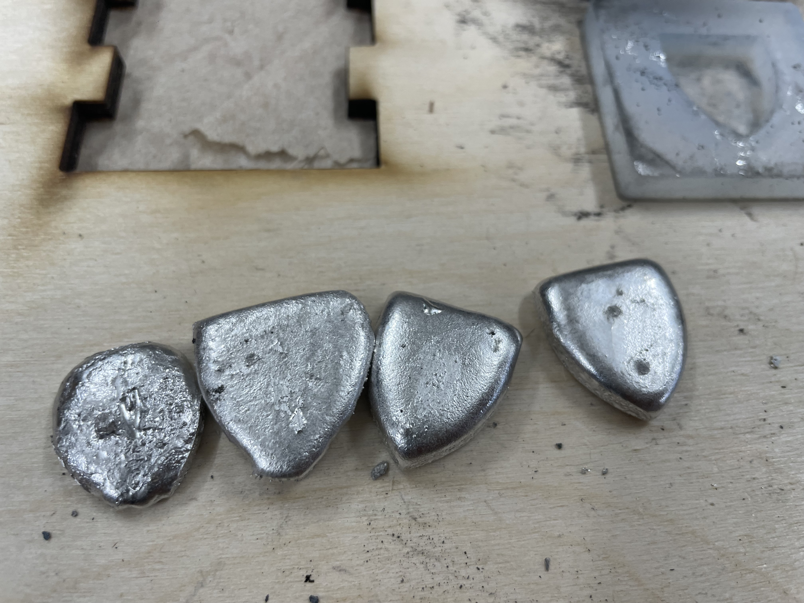

<div class="textcontainer">
<p class="margin"> </p>
<h2>Week 8: CNC Milling</h3>
<h3>Assignment: Make Something With CNC</h4>
<h4>Personally, this week I enjoyed learning about all the possible applications of CNC Mililng. I was particularly
struck by the idea of being able to create molds for casting, as I had always wanted to try that out. Consequently,
for my project I decided to create a mold for the Harvard School of Engineering and Applied Sciences logo.
</h4>

<h4> The first step was to design the mold in Fusion 360. I started by importing an image of the logo and tracing it
to create a 2D sketch. Then, I extruded the sketch to create a 3D model of the logo. Using Fusion's combine settings,
I created the sorrounding box. The first time I milled I realize it was too big so I reduced it. However, it ended up
being to small and when it came out the sorrounding square had not been properly milled and would have not served as
a mold. Something to note is that due to the size of the mill (1/8th of an inch) it cannot create super detailed molds
which meant some details of the logo were lost or rounded. Therefore, I enlarged it a little bit. Here are the molds:
</h4>
<video width="640" height="480" controls>
<source src="./Mill.mp4" type="video/mp4">
</video>

<h4> Subsequently, I mixed the silicone Rubber for mold making in a 1:1 proportion and I poured it into the mold.</h4>
<img src="Silicone.jpg" alt="Pouring Silicone into the Mold" width="500" />
<h4> After letting it cure for 24 hours, I demolded the silicone. I was impressed by the capacity of the silicone to
preserve the details of the milled logo. Here is the final result:</h4>

<h4> Finally, I decided that I wanted to try out the bismuth alloy because I really liked the BB-8 model made in lab. I
discovered, however, that it was much more difficult to melt than I had anticipated. After several times of running
the pizza setting in the microwave, I was able to melt some metal. However, when I poured it into the mold, it did not fill all the details
of the logo because I fell short of metal. Therefore, I tried again by melting more metal and pouring it into the mold. This the
general outline came out better but it had many bubbles which did not really allow to distinguish the form. I researched
why this happened and I found that I needed to improve my pouring technique. Therefore I tried again and got a much better result.
It still has some bubbles but the details are much more defined, however, given that the bismuth solidifies quickly, one cannot
be that slow and it will be inevitable to have bubble marks. Here are the results:</h4>



<h3>Key Takeaways</h3>
<h4>
<ul>
<li> Always take into account the size of the milling tool when trying to create detailed design</li>
<li> Silicione is incredibly good at preserving details of the previously milled object</li>
<li> Bismuth alloy requires at least 4 but preferably 5 pizza sessions in the microwave to melt</li>
<li> The pouring technique greatly influences the bismuth alloy's capability to preserve details.
One needs to pour slowly, homogenously, and continuously to avoid bubbles.
</li>
<li> Molding and casting is a great technology that allows to create a myriad of forms and objects.</li>
</ul>
</h4>
</div>